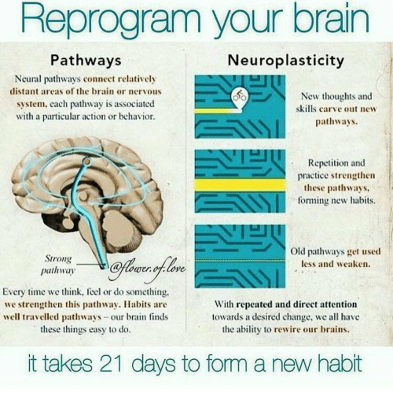

Understanding Neuroplasticity
Neuroplasticity, also known as brain plasticity, is the brain's incredible ability to change and adapt throughout life. This means your brain can:
- Rewire itself after injury
- Form new neural connections
- Learn and adjust in response to experience
How Neuroplasticity Helps in Recovery
After an acquired brain injury, neuroplasticity plays a critical role in the recovery process. With targeted therapies and rehabilitation, the brain can learn to compensate for damaged areas and regain lost functions.
